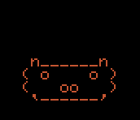

> claudestick
Approvals, status and one-button macros for Claude, on an M5Stack StickS3.
aPlug the StickS3 into this computer with a data USB-C cable.
bClick Install, pick the Stick's serial port, and let it flash (~1 min).
cWhen it asks, Connect to Wi-Fi and enter your home network (2.4 GHz).
dClick Visit device. Your Stick's own setup page opens, where you name it, pick a buddy, and get the install command.
Already flashed? The same button updates the firmware and keeps your settings (skip the erase prompt).
A fresh Stick with no Wi-Fi opens a hotspot named ClaudeStick-XXXX. Join it from your phone and the setup page pops up (or open 192.168.4.1). Enter your Wi-Fi there and finish setup.
- No serial port in the list: try another cable (many are charge-only). On Windows, check that Device Manager shows a "USB JTAG/serial" device.
- Flashing fails or the Stick is unresponsive: put it in download mode. With USB plugged in, hold the side button until the internal green LED blinks, then click Install again. The bootloader is in ROM, so this always works.
- Start over: hold A+B while powering on to forget Wi-Fi and reopen setup.
- Back to stock: M5Burner → StickS3 → factory firmware.